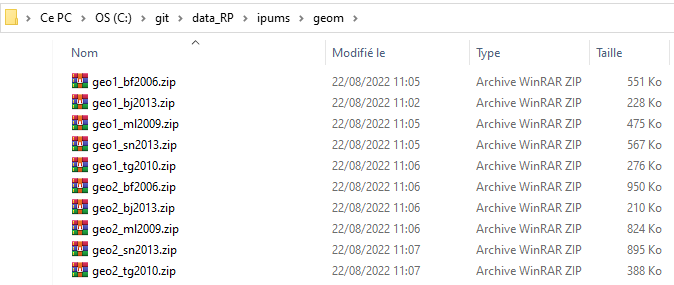
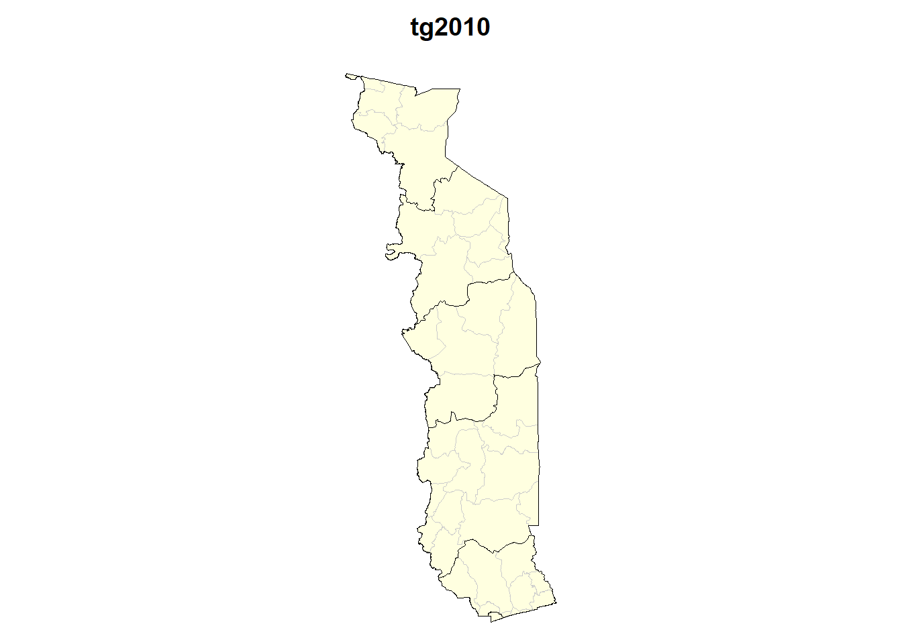

3 Données géométriques
Un des grands avantages d’IPUMS International pour l’EE CIST 2023 est constitué par la mise à disposition de fonds de carte au format shapefile dont les codes correspondent avec les variables individuelles poue deux niveaux administratifs en dessous du nivau national. On peut donc théoriquement agréger les données individuelles, en déduire des indicateurs agrégés à deux niveaux administratifs différents et en faire la cartographie. L’objectif de cette note est de vérifier que tout ceci fonctionne bien et que les fonds de carte sont de bonne qualité.
3.1 Cas de recensements isolé
Le premier cas concerne la géométrie d’un recensement précis relatif à un seul pays et une seule date. Par exemple la géométrie du Togo lors du RP 2010.
3.1.1 Accès aux données
Une fois que vous êtes connecté en tant qu’utilisateur, vous pouvez accéder aux données géométriques en cliquant dans la barre latérale gauche sur le lien “GEOGRAPHY & GIS” :
Ce dernier vous conduit à une page comportant de nombreuses possibilités d’obtention de données géométriques pour chacun des recensements de tous les pays à toutes les dates. On utilisera ici uniquement les géométries associées aux données de recensement, mais la page offre d’autres possibilités, notamment pour la constitution de découpages à plusieurs dates ou pour les liens vers les données DHS. Pour assurer une correspondance exacte avec les données de recensement, on utilise uniquement les shapefile correspondant aux indicateurs contenus dans les données individuelles :
Sur chacune des deux pages on va ensuite télécharger les fonds de carte qui correspondent à des dossiers au format .zip ce qui en réduit la taille. On les décompressera uniquement au moment de leur importation vers R, Qgis ou Geoda.
Au total nous devons récupérer 10 fichiers correspondant aux 2 niveaux de découpages de chacun des 5 recensements pour lesquels nous avons collecté des échantillons de données individuelles.
 - N.B. Chaque fichier correspond à une date précise et un pays précis. Dans le cas d’un pays dont les régions ont change, il faut télécharger autant de fichiers qu’il y a de géométries différentes. Précisons par ailleurs que les fonds de carte proposés sont assez généralisées et ne se prête pas à des opérations précises de repérage de terrain : ils ne servent qu’à visualiser les résultats de recensement.
Les fichiers obtenus sont directement utilisables par Qgis ou GeoDa mais ils doivent être convertis au format sf pour être utilisés dans R. On peut utiliser pour cela un programme qui automatise la tâche du type de celui qui est présenté ci-dessous pour le Burkina et qui sera ensuite appliqué à tous les autres recensements :
3.1.2 Bénin RP 2013
library(sf)Linking to GEOS 3.9.1, GDAL 3.4.3, PROJ 7.2.1; sf_use_s2() is TRUEcensus="bj2013"
unzip(paste0("ipums/geom/geo1_",census,".zip"), exdir="ipums/geom/tmp")
map1<-st_read(paste0("ipums/geom/tmp/geo1_",census,".shp"),quiet=T)
saveRDS(map1,paste0("ipums/geom/geo1_",census,".RDS"))
unzip(paste0("ipums/geom/geo2_",census,".zip"), exdir="ipums/geom/tmp")
map2<-st_read(paste0("ipums/geom/tmp/geo2_",census,".shp"),quiet=T)
saveRDS(map2,paste0("ipums/geom/geo2_",census,".RDS"))
par(mar=c(0,0,2,0))
plot(map2$geometry, col="lightyellow", border="gray80", lwd=0.4, main=census)
plot(map1$geometry,add=T, col=NA, border = "black",lwd=0.8)3.1.3 Burkina Faso RP 2006
3.1.4 Mali RP 2009
3.1.5 Sénégal RP 2013
3.1.6 Togo RP 2010

3.2 Géométries harmonisées dans le temps
IPUMS propose pour chaque pays des géométries harmonisées permettant de comparer les situations à plusieurs dates et, du même coup, de procéder à des analyses de migrations. La résolution spatiale est évidemment plus faible mais l’intérêt beaucoup plus grand si l’on souhaite par exemple construire des séries chronologiques ou étudier les migrations entre deux dates. L’inconvénient est évidemment d’aboutir parfois à des unités administratives fictives qui sont un compromis entre plusieurs redécoupages.
3.2.1 Accès aux données
La procédure est la même que précédemment mais en suivant un autre chemin pour accéder aux fonds de carte harmonisés dans le temps. Le lien avec les données individuelles de recnsement sera désormais effectué à l’aide de codes standard portant les noms respectifs de GEOLEV1 et GEOLEV2.

Pour les pays qui n’ont pas connu de changement administratif, les données harmonisées correspondent au données du dernier recensement (Bénin). Dans le cas où il y a eu des fragmentations mais sans remise en cause des limites, le découpage harmonisé sera en général celui d’un recensement plus ancien (Sénégal). Enfin, dans le cas où le redécoupage conduit à des découpages avec interesections, il faut agréger les unités problématiques en ensembles plus vastes qui ne correspondent à aucune date précise de recensement (Togo). Lorsqu’un recensement est manifestement non compatible avec les précédents, IPUMS renonce à chercher un plus petit commun dénominateur
3.2.2 Bénin harmonisé : RP 1979, 1992, 2002 & 2013
- Validation ? : à faire par les formateurs du pays concernés
3.2.3 Burkina Faso harmonisé : RP 1996 & 2006
- Validation ? : à faire par les formateurs du pays concernés
3.2.4 Mali harmonisé : RP 1987, 1998 & 2009
- Validation ? : à faire par les formateurs du pays concernés
3.2.5 Sénégal harmonisé : RP 1988, 2002 & 2013
- Validation ? : à faire par les formateurs du pays concernés
3.2.6 Togo harmonisé : RP 1970 & 2010
Dans le cas du Togo, il n’est pas possible d’harmoniser le niveau géographique II entre les différentes dates de recensement. Le seul découpage haronisé concerne le niveau I mais il réduit le pays à trois régions seulement. On peut donc estimer que, dans ce cas il n’est pas vraiment possible de constituer des séries chronologiques.
- Validation ? : à faire par les formateurs du pays concernés